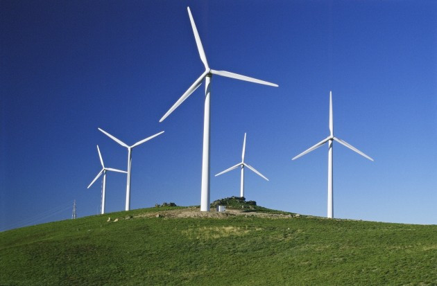

Technology ("science of craft", from Greek τέχνη, techne, "art, skill, cunning of hand"; and -λογία, -logia[2]) is the sum of techniques, skills, methods, and processes used in the production of goods or services or in the accomplishment of objectives, such as scientific investigation. Technology can be the knowledge of techniques, processes, and the like, or it can be embedded in machines to allow for operation without detailed knowledge of their workings. Systems (e.g. machines) applying technology by taking an input, changing it according to the system's use, and then producing an outcome are referred to as technology systems or technological systems. The simplest form of technology is the development and use of basic tools. The prehistoric invention of shaped stone tools followed by the discovery of how to control fire increased sources of food. The later Neolithic Revolution extended this, and quadrupled the sustenance available from a territory. The invention of the wheel helped humans to travel in and control their environment.

TECHNOLOGY
It's your choose
What is technology really?
